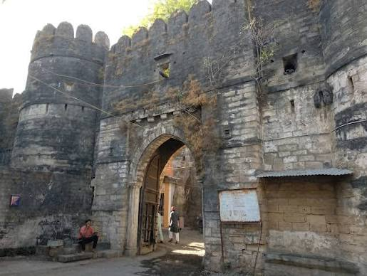

A fort and town was established at the foothills of Girnar hill during reign of the Maurya Empire and continued to be used during Gupta period, but it lost its importance when the capital of Saurashtra region was moved from Junagadh to Vallabhi by Maitraka.
Chudasamas settled around Junagadh from 875 CE according to bards when they acquired Vamansthali (Vanthli) from Chavda ruler.
A 10th-century Chudasama king Abhira Graharipu (r. c.940-c.982) cleared the old citadel free from the jungle.
From the evidence contained in Hemchandra's Dvyashraya, it can be concluded that Graharipu laid the foundations of the citadel as it now exists.
The legend is told about its rediscovery.